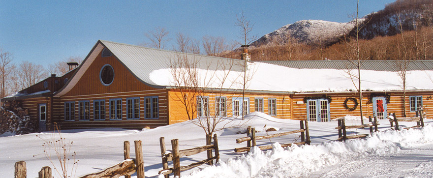

Nous allons nous marier à Eastman en juin prochain et nous sommes très ravis de partager cette journée spéciale avec chacun d'entre vous! Le mariage prendra place à la cabane à sucre Haut Bois Normand. On aimerait vous réserver pour cette journée donc veuillez RSVP.
Date: 16 juin 2018
Heure: 16:00
La cérémonie se déroulera à l'extérieur à ciel ouvert. Donc s'il vous plaît apportez un parapluie juste au cas où il pleuve.

LIEU
426 Chemin George Bonnallie, Eastman, Québec J0E 1P0
Haut Bois Normand est une cabane à sucre avec tout le charme d'antan!
HÉBERGEMENT
Voici quelques options pour l'hébergement:
L'auberge au complet est réservée la soirée du mariage. Cette option d'hébergement sera idéalement pour des personnes qui ont l'intention de rester tard pour faire le party. Ariane et John vont coordonner les réservations pour cette auberge de 32 lits. Veuillez contacter directement Ariane ou John si vous êtes intéressé(es) à y dormir. C'est ~30$ par personne.

Ces jolis chalets écologiques sont à 2,5 km de Haut Bois Normand. Chaque chalet héberge entre 4 et 14 personnes. Notez qu'il est requis de réserver deux nuits, et que ce n'est pas tous les chalets qui ont un accès routier. Veuillez les contacter le plus tôt possible si vous êtes intéressé(es) à y loger, car on s'attend à se qu'ils soient bien populaires pendant l'été. Quand vous réservez, mentionnez que vous y êtes pour notre mariage, car ils vont potentiellement donner un rabais s'il y a pluieurs chalets de loués pour l'événement.
Un motel modeste à 5 km.
D'autres options à proximité:
Cottages Du Lac Orford
Gite La Marmotte B+B
Arkadia Eastman B+B
Auberge Du Mont Orford
Spa Eastman ($$$)
De nombreux terrains de camping dans la région
De nombreux hôtels à Magog, QC (à 20 minutes de route)
REGISTRE DES CADEAUX
Il n'y a pas de registre des cadeaux! Si vous voulez tout de même nous offrir quelque chose, un cadeau monétaire serait le plus désiré. Nous prenons l'avion pour retourner à Vancouver après le mariage et il ne sera pas possible pour nous de rapporter des grands cadeaux.